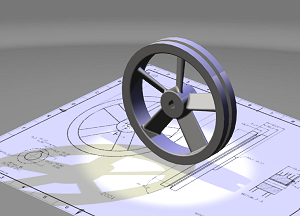

建立高质量图像
-
使用或修改到目前为止创建的光源，或者创建其它光源。
-
尝试其它基本设置选项，比如不同的光源类型，不同的颜色和强度。
-
尝试使用不同的光源位置。
记住使用点构造器和矢量构造器来帮助您放置和定向光源。
-
当您想看某个场景的高质量渲染时，点击高质量图像渲染工具条上的启动 HQI 渲染
 。
。
上述示例有以下光源设置：
-
在练习中创建的蓝色平行光，重新定位以产生逼真的阴影
-
在练习中创建的聚光灯，位于飞轮 Z 轴正上方，圆锥角40度，光源颜色为淡黄色
注释
您可以使用高级光源对话框中的细节和边缘列表，来修改高质量渲染中阴影的特性。
-
-
点击去除 HQI 渲染
。